선생님의 전문성
전체 강사 10년 이상 경력의 전문적인 학습관리
시스템을 갖춘 자기주도학습 · 개인형 담임 관리
순수한 공부 시간을 활용한 진짜 공부. 대구수성점의 관리형 자기주도학습을 한 화면씩 살펴봅니다.
전문성 · 시스템 · 입시 성과
전체 강사 10년 이상 경력의 전문적인 학습관리
자신있습니다. 철저하고 체계적인 관리
대학교육협의회 전문 위원의 차별화된 입시 컨설팅
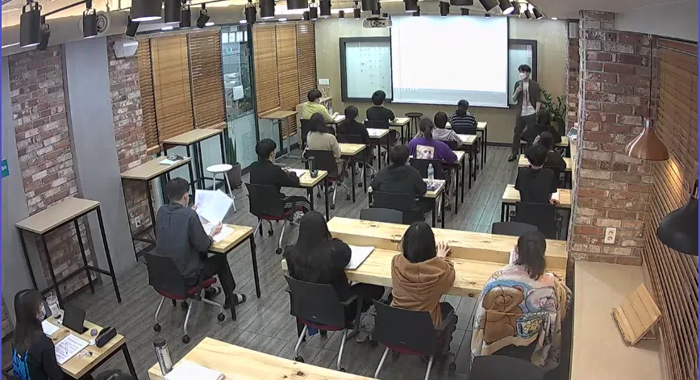
상담에서 좌석 배정, 오리엔테이션까지
국어·영어·수학 교과 학습 상담으로 중장기 학습 계획을 설계합니다.
남녀 분반 형태로 개인 지정 좌석에 배정하고 추가 수납공간으로 사물함을 배정합니다.
정수기·프린터 사용, 원내 생활 규범, 학습 시스템 이용 방법을 안내합니다.
출결 생활패턴을 관리할 수 있다는 점과 면학분위기 조성이 이투스247학원을 선택하게 된 이유였습니다. [이화여자대학교 계열별 통합선발(자연) 합격 이 OO 학생]
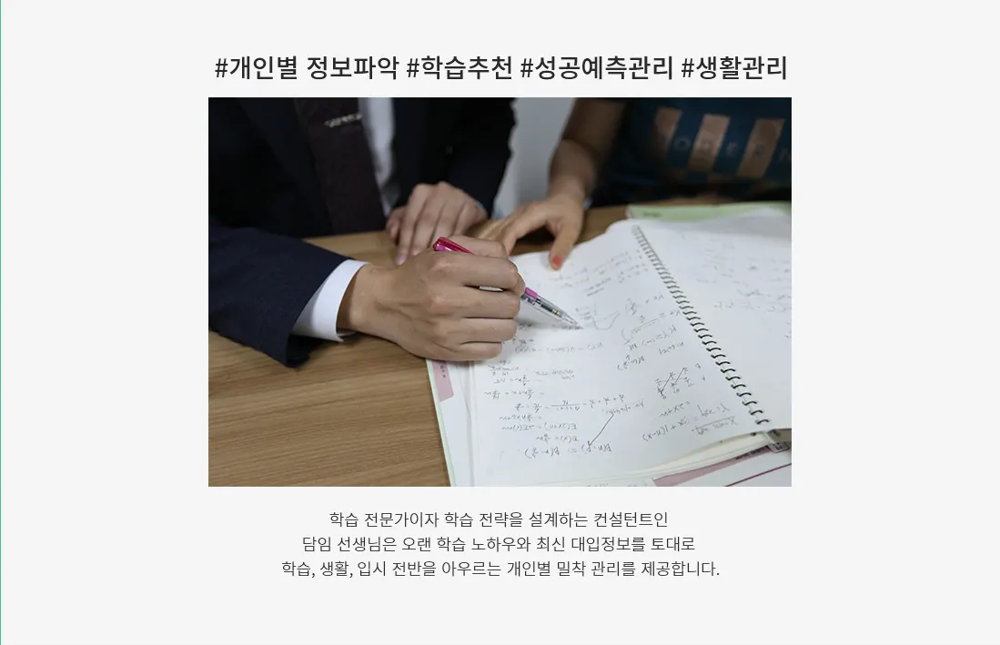
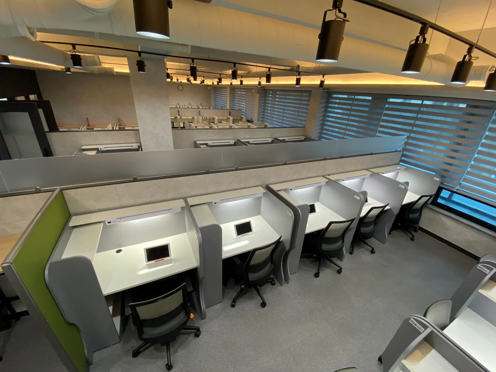
순공시간 · 플래너 · 리포트 · 영어 루틴
하루 학습 시간을 직접 확인하고 누적 학습 리듬을 관리합니다.
개인별 플래너를 기준으로 학습 흐름을 만듭니다.
학습 결과를 리포트로 확인하고 다음 계획에 반영합니다.
매일 반복되는 기초 루틴으로 감각을 유지합니다.
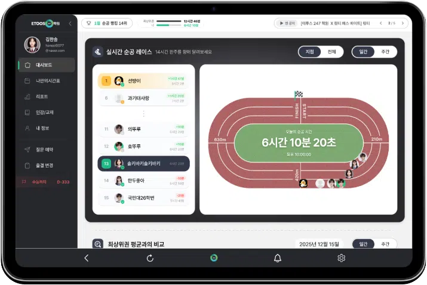
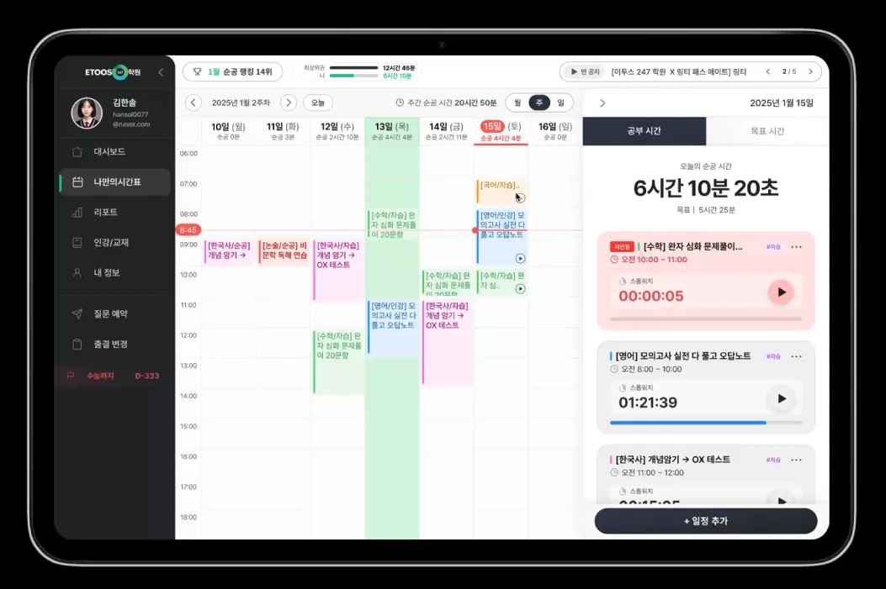
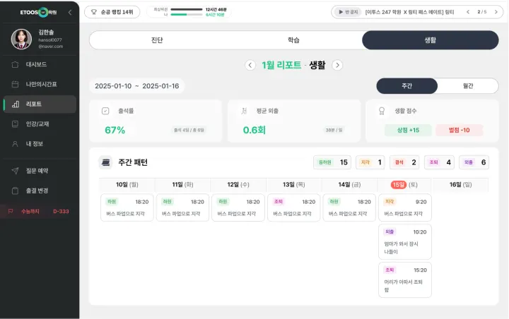
자기주도적인 학습이 가능하고 나만의 시간표를 만들고 일일 테스트로 학습 감각을 유지하는 부분이 마음에 들었습니다. [연세대학교 영어영문학과 이 OO]
학습집중시간과 학습정돈시간을 구분합니다.
목표를 이뤄내는 관리를 바탕으로 하루 10시간 이상의 순공을 설계합니다. 이동이 금지된 학습집중시간과 이동 가능한 학습정돈시간을 구분해 몰입과 정돈을 함께 관리합니다.
시간 관리에 어려움을 느꼈고, 순공시간을 늘리기 위해서 이투스247학원을 선택했습니다. [서울대학교 수의예과 합격 권 OO 학생]
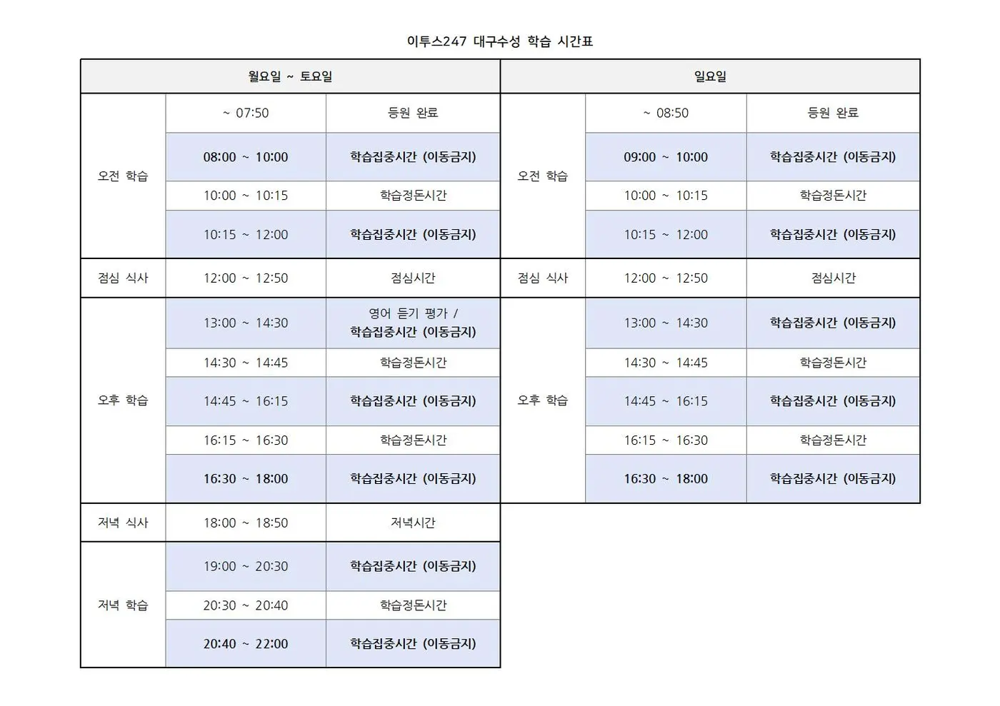
태블릿 제한 · 주간 점검 · 순찰과 CCTV 모니터링
WIFI 자체에서 유튜브와 SNS를 차단하고 E-Scort 태블릿 모니터링 시스템으로 학습 용도로만 사용하게 합니다.
플래너 점검을 통해 학습 진도를 확인하고 내용 있는 순공 시간을 만들도록 관리합니다.
학습실 내 졸음과 소음을 관리해 쾌적한 몰입 환경을 유지합니다.
태블릿PC 모니터링으로 딴 짓을 할 수 없어 공부에만 집중하게 되었습니다. [고려대학교 경영학과 합격 정 OO 학생]
국어·영어·수학 수능급 입시강사의 상주 관리
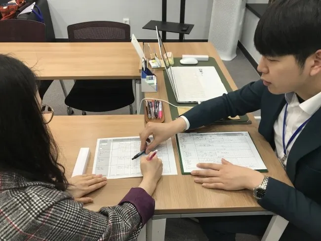
공부하다 막히는 문제, 정확한 풀이가 필요한 문제를 국어·영어·수학 상주 관리 시스템으로 바로 확인합니다.
1:1 질의응답때문에 이투스247학원을 선택하였습니다. 모르는 것을 바로 해결할 수 있어 좋았습니다. [서울대학교 자유전공학부 정 OO]
공부하다 문제가 안 풀리거나 정확한 풀이가 필요한 경우가 많은데, 그럴때마다 1:1 질의 응답으로 바로 해결할 수 있어서 좋았습니다. [고려대학교 의예과 합격 최 OO]
도시락이 아닌 뷔페형 급식
따뜻한 반찬과 국을 제공하는 뷔페형 급식으로 운영합니다.
식수당 7,900원
올해 정말 식사시간이 행복했습니다. 집밥보다 훨씬 편안하고 부담없이 먹을 수 있었고 (엄마 미안) [동국대학교 한의예과 합격 이 OO]
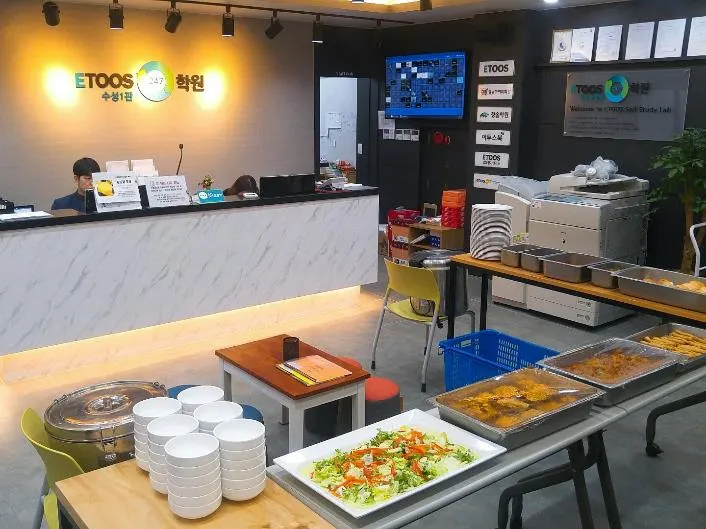
시작 시점이 달라도 빈틈 없이 설계합니다.
학생이 언제 공부를 시작해도 학습에 빈틈이 없도록 학습 전문가가 함께 학습 로드맵을 설계합니다.
학습 스케줄링 상담으로 모든 과목을 꼼꼼하게 챙길 수 있었습니다. [조선대학교 치의예과 합격 김 OO 학생]
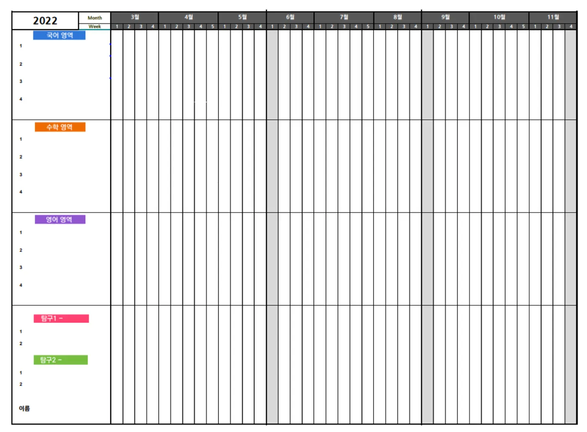
필요한 학습만 선별하는 세분화된 상담
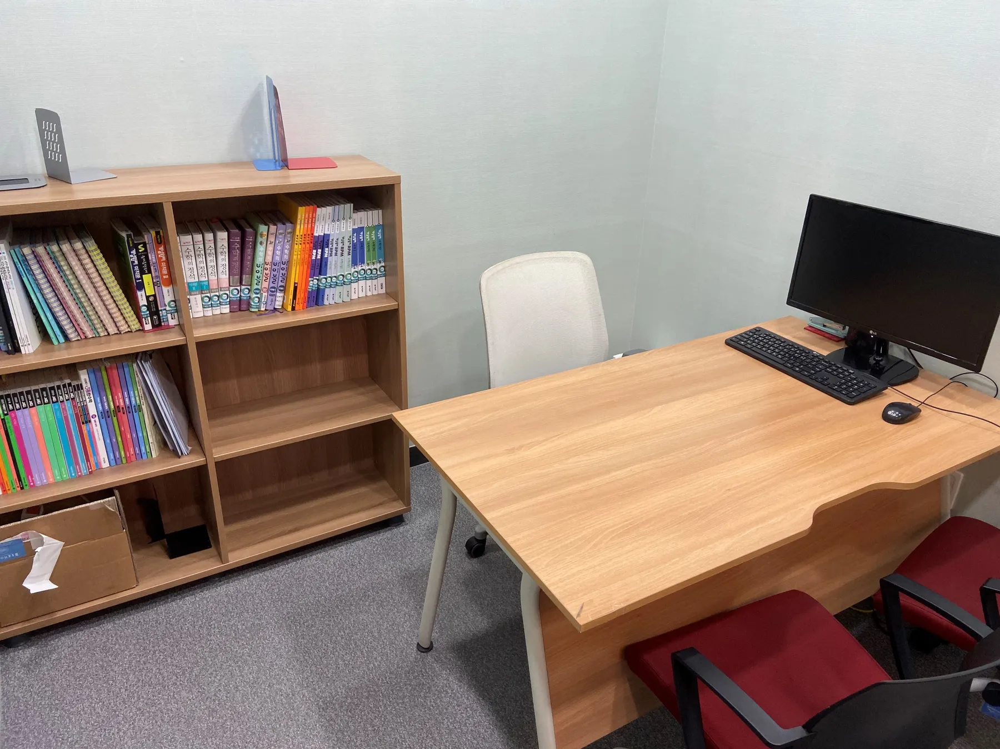
다년간의 경력을 갖춘 교과 선생님들과 상담하며 기본 개념부터 최종 심화까지 학습 커리큘럼 단계를 세분화합니다.
매달 치르는 모의고사 결과를 점검하고 개인에게 최적화된 추천과 큐레이션을 제공합니다.
학습상담과 질의 응답으로 객관적인 진단을 받을 수 있었고, 시기별 계획 전략을 상담받을 수 있었습니다. [고려대학교 신소재공학부 합격 정 OO 학생]
점수뿐 아니라 오답 하나까지 점검합니다.
매달 모의고사 결과를 확인하고, 개인에게 필요한 학습 단계와 보완 방향을 다시 설계합니다.
모의고사 결과를 점수 뿐만 아니라 오답 하나 하나 세세하게 피드백해주신 점이 수학 점수를 올리는 데에 가장 큰 도움이 되었습니다. [경희대 한약학과 엄 OO]
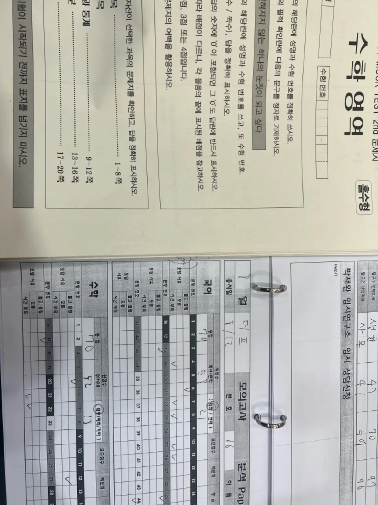
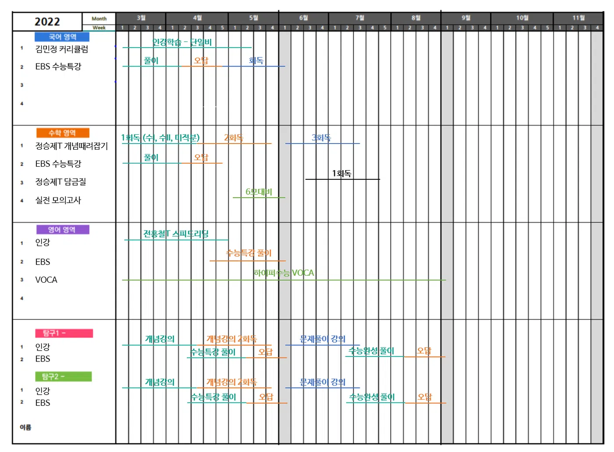
일일 플래너 실천 여부와 생활 문제까지 밀착 관리
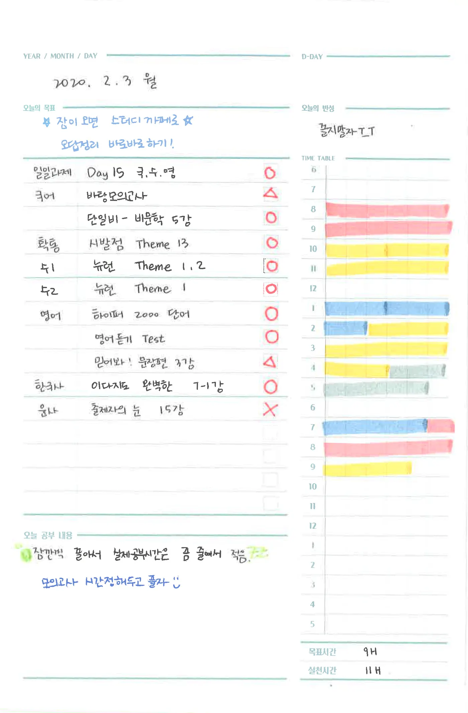
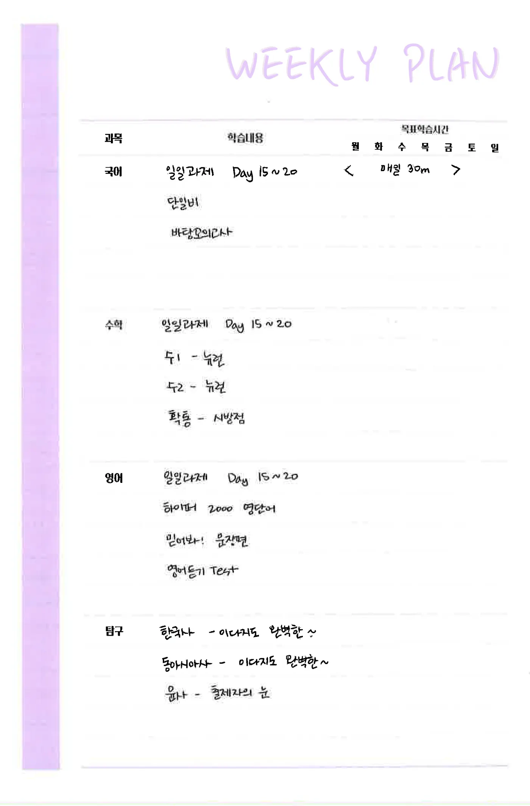
자기주도학습에서 가장 중요한 일일 플래너 실천 여부를 점검하고 개선점을 피드백합니다.
플래너를 바탕으로 취약점을 판단하고, 생활 문제에 대한 담임 상담을 실시합니다. 지각·조퇴 등 출결 사항도 매달 점검합니다.
2주에 한번씩 진행된 담임 선생님과의 상담이 가장 큰 도움이 되었습니다. [고려대학교 영어교육과 합격 박 OO 학생]
공부의 리듬을 만드는 기본 궤도
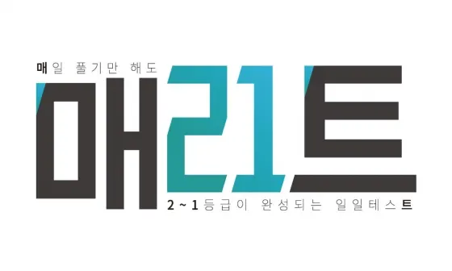
모의고사와 특강까지 이어지는 확장 궤도
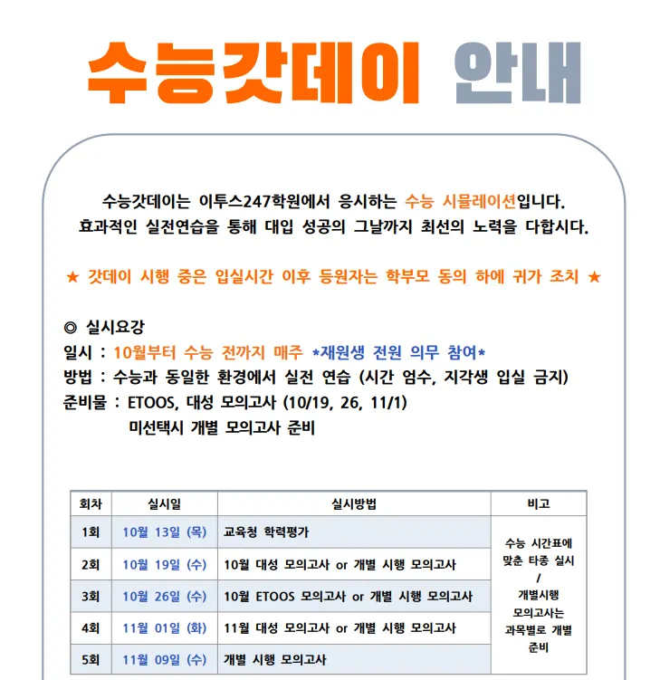
학습 공간과 이용 조건
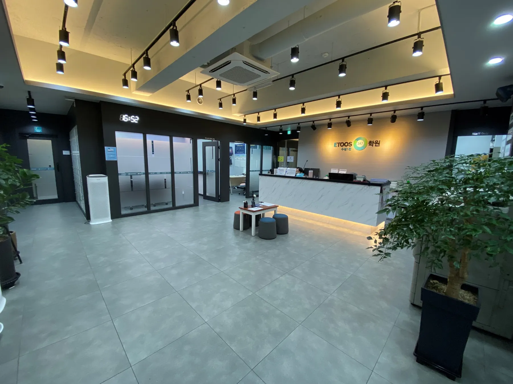
오픈형 평상공간에서 학습을 원하는 학생들은 하루 3 학습시간 이내로 스터디카페에서 학습할 수 있습니다.
이용가능출결을 비롯한 생활관리, 각 교과별 학습관리는 1:1로 진행됩니다. 코칭실이 별도 공간으로 마련되어 있습니다.
이용가능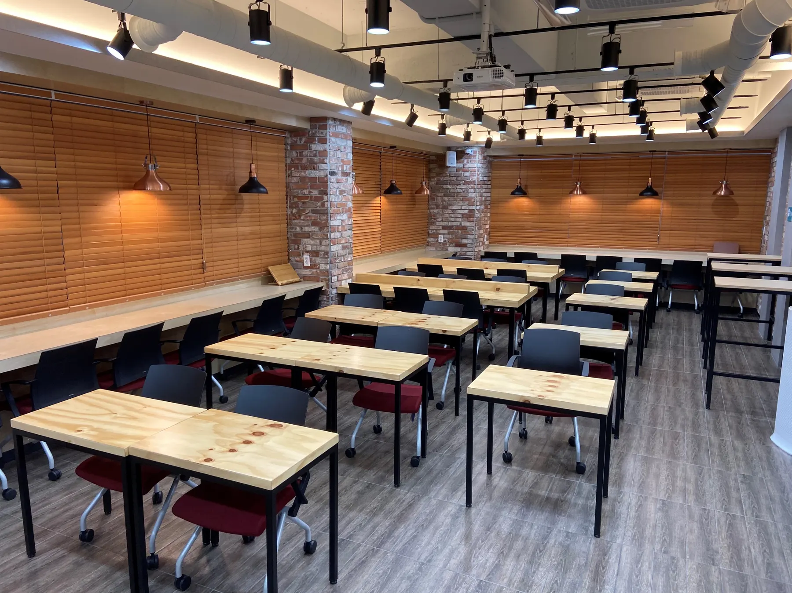
양옆으로 넓은 광폭 책상으로 학생간 간격이 넓습니다. 좌측 및 좌하단에 여유로운 수납공간이 있습니다.
75만원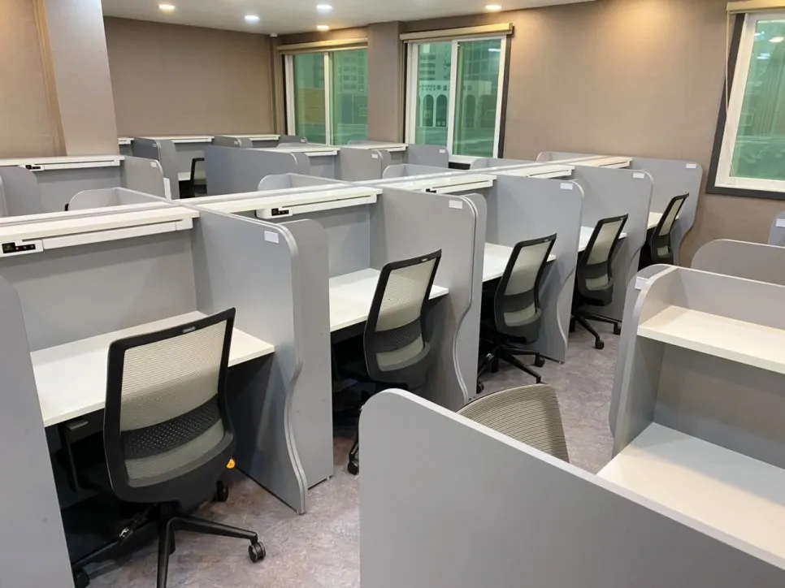
대구수성 1관에 있는 최신식 데스크. 상단 무소음 서랍 수납공간, 기역자 책상으로 넓게 학습할 수 있습니다.
77만원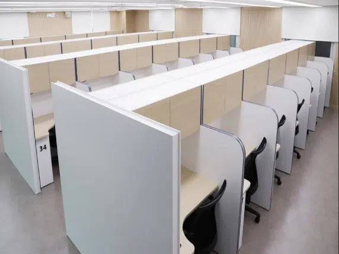
80cm 좌우 공간, 상단 수납공간으로 학습하기에 충분히 쾌적한 일반 정규좌석입니다.
65만원좌석별 특징 비교
오픈형 평상공간에서 학습을 원하는 학생들은 하루 3 학습시간 이내로 스터디카페에서 학습할 수 있습니다.
이용가능출결을 비롯한 생활관리, 각 교과별 학습관리는 1:1로 진행됩니다. 코칭실이 별도 공간으로 마련되어 있습니다.
이용가능양옆으로 넓은 광폭 책상으로 학생간 간격이 넓습니다. 좌측 및 좌하단에 여유로운 수납공간이 있습니다.
75만원대구수성 1관에 있는 최신식 데스크. 상단 무소음 서랍 수납공간, 기역자 책상으로 넓게 학습할 수 있습니다.
77만원80cm 좌우 공간, 상단 수납공간으로 학습하기에 충분히 쾌적한 일반 정규좌석입니다.
65만원프리미엄·얼티밋·정규좌석 구성
오픈형 평상공간에서 학습을 원하는 학생들은 하루 3 학습시간 이내로 스터디카페에서 학습할 수 있습니다.
이용가능출결을 비롯한 생활관리, 각 교과별 학습관리는 1:1로 진행됩니다. 코칭실이 별도 공간으로 마련되어 있습니다.
이용가능양옆으로 넓은 광폭 책상으로 학생간 간격이 넓습니다. 좌측 및 좌하단에 여유로운 수납공간이 있습니다.
75만원대구수성 1관에 있는 최신식 데스크. 상단 무소음 서랍 수납공간, 기역자 책상으로 넓게 학습할 수 있습니다.
77만원80cm 좌우 공간, 상단 수납공간으로 학습하기에 충분히 쾌적한 일반 정규좌석입니다.
65만원가격 조건이 반영된 좌석 안내
오픈형 평상공간에서 학습을 원하는 학생들은 하루 3 학습시간 이내로 스터디카페에서 학습할 수 있습니다.
이용가능출결을 비롯한 생활관리, 각 교과별 학습관리는 1:1로 진행됩니다. 코칭실이 별도 공간으로 마련되어 있습니다.
이용가능양옆으로 넓은 광폭 책상으로 학생간 간격이 넓습니다. 좌측 및 좌하단에 여유로운 수납공간이 있습니다.
75만원대구수성 1관에 있는 최신식 데스크. 상단 무소음 서랍 수납공간, 기역자 책상으로 넓게 학습할 수 있습니다.
77만원80cm 좌우 공간, 상단 수납공간으로 학습하기에 충분히 쾌적한 일반 정규좌석입니다.
62만원최종 좌석 가격 비교
오픈형 평상공간에서 학습을 원하는 학생들은 하루 3 학습시간 이내로 스터디카페에서 학습할 수 있습니다.
이용가능학습 전문가이자 학습 전략을 설계하는 컨설턴트인 담임 선생님이 개인별 밀착 관리를 제공합니다. 코칭실이 별도 공간으로 마련되어 있습니다.
이용가능양옆으로 넓은 광폭 책상으로 학생간 간격이 넓습니다. 좌측 및 좌하단에 여유로운 수납공간이 있습니다.
71만원대구수성 1관에 있는 최신식 데스크. 상단 무소음 서랍 수납공간, 기역자 책상으로 넓게 학습할 수 있습니다.
73만원80cm 좌우 공간, 상단 수납공간으로 학습하기에 충분히 쾌적한 일반 정규좌석입니다.
62만원의미있는 관여로 변화를 만드는 담임 관리 시스템
개인별 학습 능력 및 성향을 진단하고 분석하여 대입의 시작부터 목표설정, 학습방법, 성공전략까지 개인별 맞춤으로 설계합니다.
학습 전문가의 노하우가 나만의 학습 커리큘럼이 되는 개인별 맞춤학습. 의미있는 관여가 입시 성공을 만듭니다.
상담실 이용 가능
박재완 입시전략연구소
입시 전략과 개인별 학습 설계를 연결합니다.